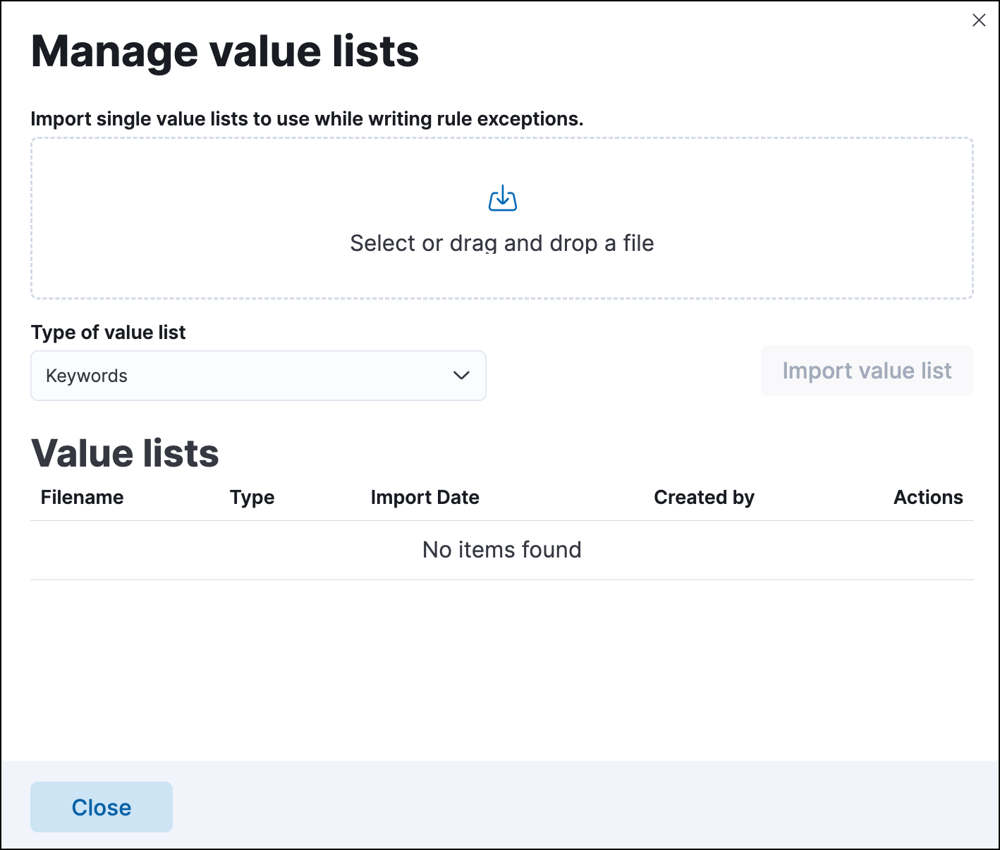

Create and manage value listsedit
Value lists hold multiple values of the same Elasticsearch data type, such as IP addresses, which are used to determine when an exception prevents an alert from being generated. You can use value lists to define exceptions for detection rules; however, you cannot use value lists to define endpoint rule exceptions.
Value lists are lists of items with the same Elasticsearch data type. You can create value lists with these types:
-
Keywords(many ECS fields are keywords) -
IP Addresses -
IP Ranges -
Text
After creating value lists, you can use is in list and is not in list operators to define exceptions.
You can also use a value list as the indicator match index when creating an indicator match rule.
Create value listsedit
When creating a value list for a rule exception, be mindful of the list’s size and data type. In general, all rule types support value list exceptions, but there are some limitations for especially large lists or certain data types. The following value list types can only be used with custom query, machine learning, and indicator match rule types:
- Keyword or IP address lists with more than 65,536 values
-
IP range lists with more than 200 dash notation values (for example,
127.0.0.1-127.0.0.4is one value) or more than 65,536 CIDR notation values - Text data type lists of any size
To create a value list:
-
Prepare a
txtorcsvfile with all the values you want to use for determining exceptions from a single list. If you use atxtfile, new lines act as delimiters.- All values in the file must be of the same Elasticsearch type.
- Wildcards are not supported in value lists. Values must be literal values.
- Go to Manage → Rules.
-
Click Import value lists. The Import value lists window opens.
 - Select the list type (Keywords, IP addresses, IP ranges, or Text) from the Type of value list drop-down.
-
Drag or select the
csvortxtfile that contains the values. - Click Import value list.
When the name of the file you are importing already exists, the values in the new file are appended to the previously imported values.
Manage value listsedit
To view, delete, or export existing value lists:
- Go to Manage → Rules.
- Click Import value lists. The Import value lists window opens.
-
In the Value lists table, click the required action button.